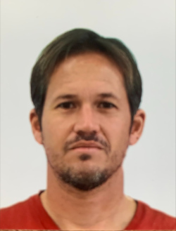

Matt Ollis
Born and raised in Sebastian, FL Matt grew up learning everything about surfing during the "golden era" of Sebastian Inlet in the 90s. After moving to St. Augustine in the early 2000s to attend college at Flagler (and keep surfing), Matt was hired at The Surf Station to paint boards and eventually became the boardroom manager for nearly a decade. In 2012, he began a career in sales and management at GE Healthcare where he continues to work to this day.
Matt continues to be heavily involved in the local surf scene as an on again and off again St. Augustine Boardriders club director and member and most notably a partner in the growing local brand, 11th Street surfboards. He and his wife, Jen recently welcomed their first child, Nina to the St. Augustine community.